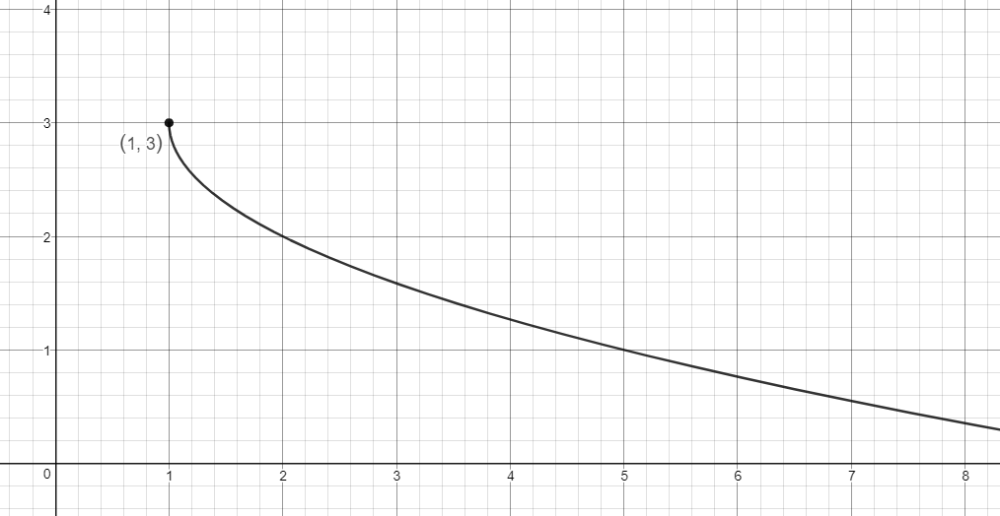
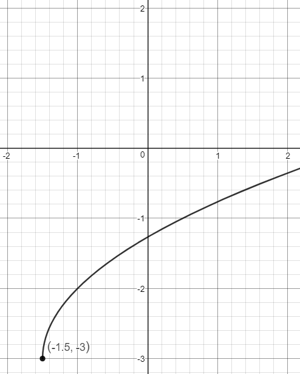
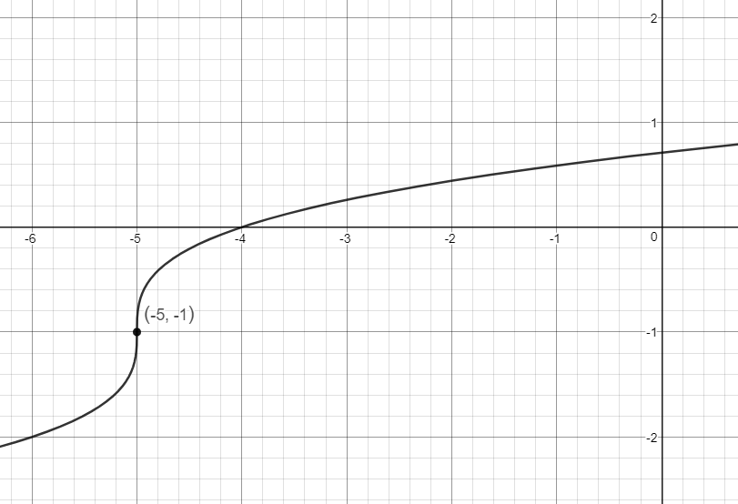
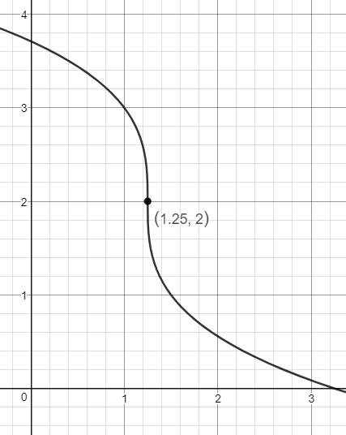

Identify the graph of a radical function.
Note: No section in the textbook directly talks about how to graph radical
functions.
You can print out these notes to follow along with the video below and keep notes to
organize your thoughts.
_
I also suggest visiting this Desmos page to see how various numbers affect
radical functions. Focus on what changing and does to each type of radical
function.
Write the equation of the function graphed below. Assume or .

Write the equation of the function graphed below. Assume or .
Hint: Be sure to remove the decimal. For example, if is shifting by to the right, then
standard form would be rather than .

Write the equation of the function graphed below.

Write the equation of the function graphed below.
Hint: Be sure to remove the
decimal. For example, if is shifting by to the right, then standard form would be
rather than .
